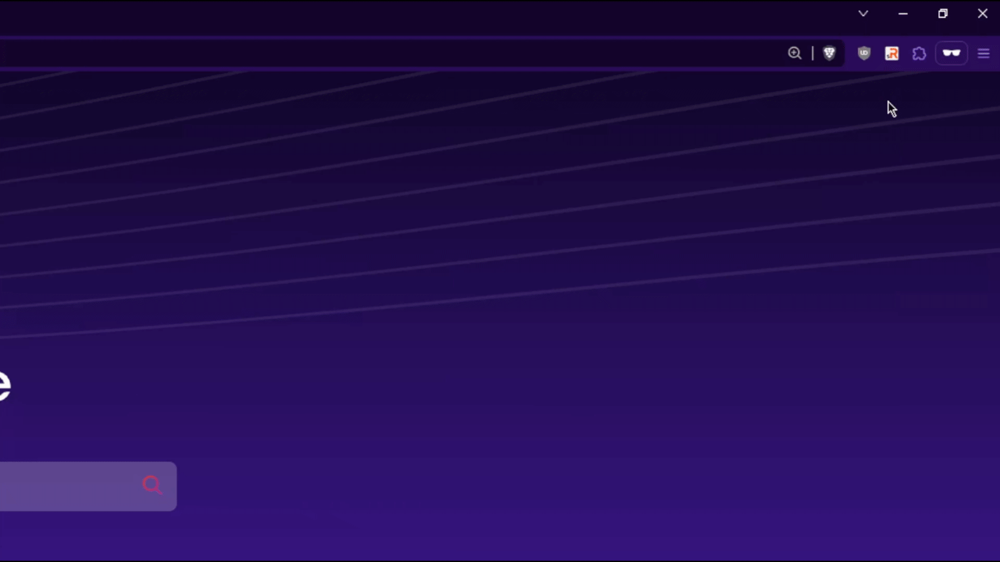

SubRoster - Curate Your Favorites
How can you add your favorite subreddits?
- Navigate to the app directory.

- Open the file named "favorites.json".
- Copy the information of your favorite subreddit. (Name, URL, Image)
- Paste the copied information into the file. (and add Image to Icons Folder)

- ALL DONE! ENJOY!
v1.0 | Made By Adrian
You're free to include any content within the JSON file. Feel free to utilize this as a handy listing application if you wish. It's crafted for individuals who prefer avoiding social media due to tracking concerns or privacy issues, yet still desire a discreet means to access and organize their favorite subreddits.
Please feel at liberty to modify the style and functionality as desired. I would be thrilled to witness its utilization. It is provided free of charge and is open source.